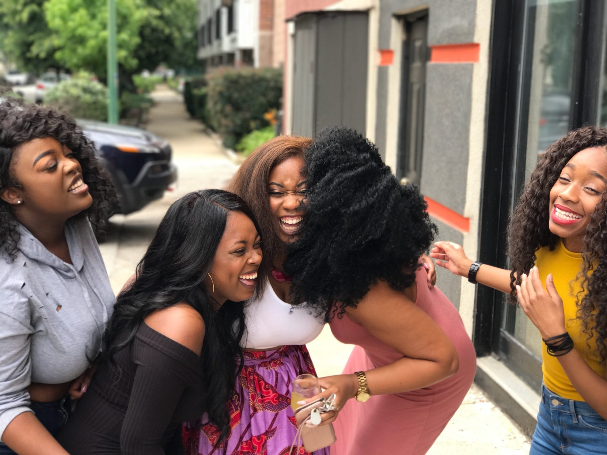

Introversão
This is a wider card with supporting text below as a natural lead-in to additional content. This content is a little bit longer.


Extroversão
This is a wider card with supporting text below as a natural lead-in to additional content. This content is a little bit longer.